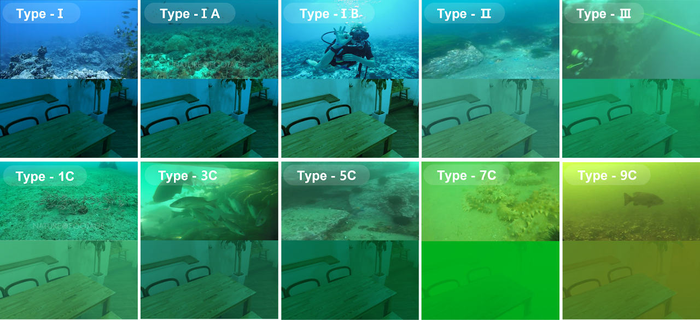

Underwater imaging is a challenging task due to factors such as scattering, absorption, and turbulence, which degrade image quality and limit visibility. In this article, we propose a novel approach for enhancing underwater images that leverages the benefits of joint learning for simultaneous image enhancement and depth estimation. We introduce Joint-ID, a transformer-based neural network that can obtain high-perceptual image quality and depth information from raw underwater images. Our approach formulates a multimodal objective function that addresses invalid depth, lack of sharpness, and image degradation based on color and local texture. We design an end-to-end training pipeline that enables joint restoration and depth estimation in a shared hierarchical feature space. In addition, we propose a synthetic dataset with various distortions and scene depths for multitask learning. We evaluate Joint-ID on synthetic and standard datasets, as well as real underwater images with diverse spectra and harsh turbidity, demonstrating its effectiveness for underwater image enhancement (UIE) and depth estimation. Our proposed method has the potential to improve the visual perception of underwater environments and benefit applications such as oceanography and underwater robotics.
Our model Joint-ID has a Segformer as its backbone, which is a Transformer. Segformer is a model for the segmentation task, but it is also a good model for estimating the correlation between pixels. Understanding the correlation between pixels is very important for this study, which is to perform the Underwater Image Enhancement Task and Depth Estimation Task. In the decoder part of Joint-ID, a mix decoder is proposed to estimate the relationship from the local region to the global region.
We tried to form a synthetic dataset with depth D ∈ [1.5, 3, 5, 7.5, 10, 15] according to the water types in 'Inherent optical properties of Jerlov water types' paper. For water types I, IA, and IB, the depth was [3, 5, 7.5, 10, 15]. For type II, the depth was [3, 5, 7.5, 10]. For III and IC types, the depth was [3, 5, 7.5]. For 3C and 5C, the depth was [3, 5]. Finally, for 9C, it was [1.5, 3]. The ground dataset used was a dataset with an object detail called 'diml'. A total of 48,000 synthetic data were generated, of which 47,000 were selected for the training set and 1,000 for the test set.
This dataset was created through distortion optical modeling, and has Enhanced Images and Dense Depth Images as ground truth. This dataset will be of great help to those working on Underwater Depth Estimation and Underwater Image Enhancement.

/ train
/ LR
/ ...
/ color
/ <enhanced images>.png
/ depth_filed #
/ <dense depth images>.png
/ synthetic
/ <synthetic distorted images>.jpg
/ test
@article{yang2023joint,
author = {Yang, Geonmo and Kang, Gilhwan and Lee, Juhui and Cho, Younggun},
title = {Joint-ID: Transformer-based Joint Image Enhancement and Depth Estimation for Underwater Environments},
journal = {IEEE Sensors Journal},
year = {2023}
}